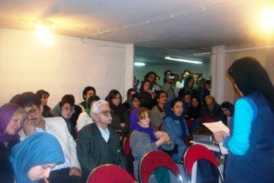
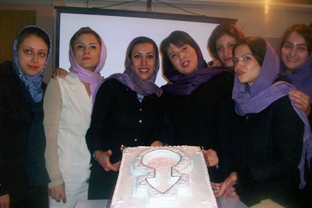

|
|
گزارش نشست کانون هستیا اندیش و کانون مدافعان حقوق کارگر به مناسبت 8 مارس: زنانگی در تکثیر
مریم مالک
يكشنبه18 اسفند 1387

تغییربرای برابری - مریم مالک: روز پنج شنبه پانزدهم اسفند ماه، کانون مدافعان حقوق کارگرو کانون هستیا اندیش میزبان زنان و مردانی بودند که به مناسبت 8مارس، روز جهانی زن گرد هم آمده بودند. این مراسم در دو پنل با موضوع "من زن زاده نشدم، زن شدم" و نیز پنل "زن در بازار کار" برگزار شد.
شیما فرزاد منش با ارائه تاریخچه ای از چگونگی پیدایش جنبش زنان در جهان و ایران آغازگر این مراسم بود.علی اخوان عضو کانون مدافعان حقوق کارگری، بیانیه این کانون به مناسبت روز جهانی زن را خواند. اخوان با تاکید بر حمایت کانون مدافعان کارگری از جنبش زنان ایران نقل از متن این بیانیه گفت:
" 8 مارس یادآور روزی است که زنان کارگر برای بدست آوردن حقوق خود علیه سرمایه داری و نظام ستمگر آن به مبارزه قاطع دست زدند. همواره سرمایه داری تلاش کرده از نیروی کار مختلف استفاده کند و هیچگاه خواهان حقوق برابر برای زنان نبوده، آنچه تاکنون که زنان بدست آوردند در نتیجه مبارزات تاریخی خود زنان بوده است. کانون مدافعان حقوق کارگر از بدست آوردن حقوق برابرزنان حمایت می کند و همه مردان و زنان را فرا می خواند تا با تمام توان خود برنامه ریزی اساسی برای دگرگونی نظامی که حقوق آنان را نادیده گرفته و نابرابری جنسیتی و قومیتی هر روز ابعاد گسترده تری می یابد را بکار گیرد".
این نشست در دو پنل برگزار شد که پنل اول سمیه رشیدی، سیاوش خدایی، مریم رضایی و در پنل دوم هاله صفر زاده، گیتا صالحی، علیرضا ثقفی سخنرانی کردند.
موضوع پنل اول این جمله سیمون دوبووار بود که " من زن زاده نشدم زن شدم " .
سمیه رشیدی بعد از تبریک 8 مارس با رویکرد جامعه شناختی به این سخن سیمون دوبووار گفت: در ادبیات جامعه شناسی، معنای زن یا مرد بودن از میان انبوه زیادی از آموخته ها تحصیل می شود. هم اکنون بحث های مربوط به هویت جنسیتی در دوره موج سوم در آثار بسیاری از فمنیست های این موج طرح شده است. زن و مرد نقطه مقابل یکدیگر نیستند. تعاریف پدر سالارانه از زنانگی زنان تعریف خود را از دست داده اند."
سیاوش خدایی با موضوع " فمنیسم – سر گیجه های علیت و عقلانیت و نقد" گفت: " فمنیسم چون از نقد شروع می کند لازمه اش نقد است. در تمام فرهنگ ها بعد از مالکیت خصوصی "فرد" اساسا مردانه بوده، خدایان مثبت هم مردان بودند و زن چون موجودی است که زایش می کند موجودی طبیعی است. در همین روند زن جایگاه فرودست پیدا می کند و مرد جایگاه فرا دست. زن برای اینکه در این عقلانیت وجود داشته باشد باید مرد را تائید کند و خودش، خودش را نابود کند. زن اگر موجودی فعال شود نه تنها خودش را اثبات می کند بلکه نظام قبلی را نیز از بین می برد".
خدایی تاکید کرد که جنبش کارگری نیازمند ارتباط با جنبش های دیگر است.
مریم رضایی سخنران دیگر این مراسم گفت:" ما با تکثر زنانگی روبرو هستیم، جنبش زنان ابتدا بیشتربا چانه زنی به حقوق زنان روبرو است. ما با وظیفه زنانگی و مردانگی روبرو هستیم. حرف دوبوار ما را به این مرحله می رساند که زن در زندگی خودش یک حوزه مقاومت می سازد. از خودمان شروع می کنیم. به ازای هر زن خود آگاه تعریف تازه ای از فمینیسم ساخته می شود."
علیرضا ثقفی ضمن تبریک روز جهانی زن گفت:" بهتر است به جای بررسی تاریخچه روز زن که بیشتر ما از آن اطلاع داریم مانند هر مسئله دیگر ببینیم آن تاریخچه مبارزات در وضعیت امروزی زنان چه تأثیری دارد؟ امروز برای رهایی زنان چه باید کرد؟ اولین مسئله 8 مارس روز زن بطور مطلق نیست، 8 مارس روز زنان کارگر است. "
ثقفی در ادامه سخنان خود به نقد سرمایه داری پرداخت و گفت: "سرمایه داری می تواند از نیروی کار زنان استفاده کند، از نیروی کار ارزانتر،و همزمان اینطور جلوه دهد که زن را دارد واردبازار کار می کند. اما با توسعه نابرابر هیچ گاه نتوانست و نخواهد توانست این حقوق برابر را به زنان بدهد. هر جا سرمایه داری نفوذ کرده تفاوت جنسیتی نه تنها گم نشده بلکه زیاد هم شده. برای سرمایه داری زنان ارزانترین نیروی کار هستند که در سخت ترین شرایط برای سرمایه داری تولید سود می کنند."
وی از فعالان کارگری زن در طول تاریخ ایران نام برد و آرزو کرد که روزی برای همه مردم انسانیت و انسان محور باشد.
پخش سرودی از جنبش زنان فاصله میان دو پنل این مراسم بود.
پنل دوم با سخنرانی هاله صفر زاده با موضع زنان در بازار کار آغاز شد. وی به بررسی فعالیت های زنان در بخش های مختلف تولید، خدمات و اجتماع پرداخت و تبعیض و ناعدالتی در بخش اقتصادی زنان را چشمگیر دانست. گیتا صالحی نیز در ادامه سخنان هاله صفر زاده اطلاعات آماری و تحقیقاتی در مورد اشتغال زنان در بخش های مختلف اقتصادی را با توجه به پژوهش هایی که در این زمینه صورت گرفته بود ارائه کرد. زنان در تولیدات دونوع حقوق دریافت می کنند یا ماهانه یا تعدادی، با بررسی هایی که ما در کار تولیدی انجام دادیم، متوجه شدیم زنان در برابر کارفرماهایشان نمی توانند اعتراض کنند چون از یکدیگر خبر ندارند. آنها در معرض خشونت های جنسی از طرف کارفرمایانشان هستند و هیچ تشکل موفقی ندیدند که بتواند به این مسائل رسیدگی کند.

صفرزاده موقعیت اقتصادی دختران جوان در بازار را مورد توجه قرار داد و با تاکید بر ارتباط جنبش زنان با جنبش کارگری گفت: "در زمینه معلم ها و زنان کشاورز هم تحقیقاتی صورت گرفته است. دستمزدهای تولیدات به کارگران زن همیشه پایین است. مثلا کار در آژآنس های هواپیمایی به صورت کارآموزی مد شده است، زنان به شکل 3 ماه رایگان کارآموزی می کنند و و دختران اطلاع ندارند در دوره کارآموزی می توانند دستمزد دریافت کنند و بعد از 3 ماه کارفرما می گوید از کارشان خوشش نیامده و بیرون می اندازند.حال باید به این سئوالات پاسخ داد که چرا خانمها به این شیوه کار ادامه می دهند؟ چرا برای خودشان حق نمی دهند حق برابر داشته باشند؟ فعالان اجتماعی در حوزه زنان کار می کنند برای اینکه پیوندی برقرار کنند چه راهکارهایی دارند؟ بین فعالان زن و توده زنان هیچ ارتباطی وجود ندارد برای این موضوع باید راهکار اندیشید."
در پایان مراسم موسیقی توسط دو هنرمند اجرا شد و همچنین کلیپی مربوط به جنبش زنان پخش شد و بعد از شعر خوانی تعدادی از حاضرین، تریبون آزاد برگزار شد.